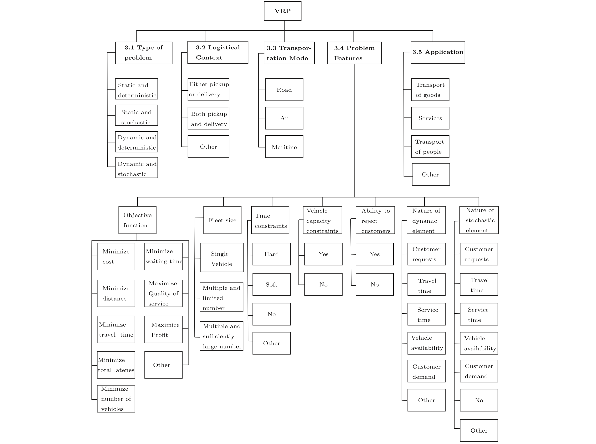
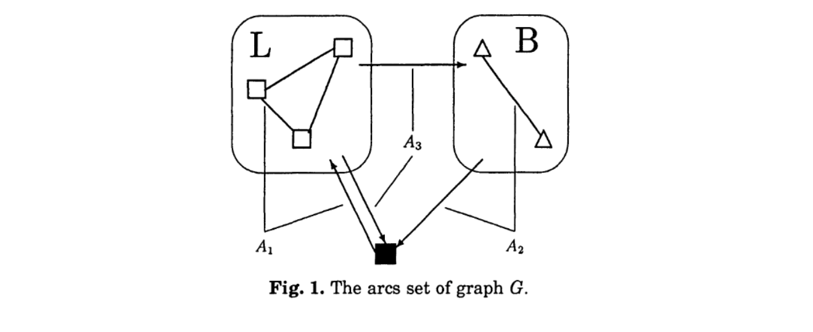

车辆路径问题（Vehicle Routing Problem）¶
一个经典的组合优化问题。在物流、通信、交通领域应用广泛。给定一个车场Depot，给定若干顾客。需要你规划一些车辆服务顾客的路线，来最小化总运输成本，同时满足：
- 每个顾客都被且仅被一辆车服务；
- 所有车辆从一个 Depot 出发回到 Depot；
- 其他相关的约束，比如重量、顾客服务的时间窗等。
The well-known Vehicle Routing Problem (VRP) a set of identical vehicles, based at a central depot, is to be optimally routed to supply customers with known demands subject to vehicle capacity constraints.
这本书做了很详细的总结，虽然已经是2008年的了。Baldacci, R., Battarra, M., Vigo, D. (2008). Routing a Heterogeneous Fleet of Vehicles. In: Golden, B., Raghavan, S., Wasil, E. (eds) The Vehicle Routing Problem: Latest Advances and New Challenges. https://doi.org/10.1007/978-0-387-77778-8_1
事实上已经有一些文献做了一些划分。

Models¶
注意，模型的区别更多是细节上的，大的假设和框架是不变的。因此，不同模型的约束可能可以相互组合。比如 Heterogeneous Fleet + Time Window + Capacity 等。在模型中需注意区分。下面几节的小标题都是强调某个变体具有的特殊约束或假设。同样的，同样的约束有可能在不同的问题中有不同的符号表示，这可能是为了用更加简洁的符号而作出的 Trade-off。
VRP (Primal)¶
| Notations | Meanings |
|---|---|
| \(i , j, h\) | 节点索引 |
| \(k\) | 车辆索引 |
| \(0,n + 1\) | depot，终点depot索引 |
| \(x_{ijk}\) | 决策变量，0-1binary， \(k\) 车是否经过边\((i,j), i \neq j\) , |
| \(c_{ij}\) | 车辆 \(k\) 经过边 \((i,j)\) 的成本 |
| \(\mu_{ij}\) | MTZ 约束的辅助变量 |
| \(V\) | 节点集合 |
| \(A\) | 所有边的集合 |
| \(K\) | 所有车辆的集合 |
| \(C\) | 所有客户点的集合 |
CVRP¶
相比于原始的 VRP 问题，每个车都有一个容量限制，卡车服务过程中，载重不能超过这个值。其他约束、假设不变。
| Notations | Meanings |
|---|---|
| \(i , j, h\) | 节点索引 |
| \(k\) | 车辆索引 |
| \(0,n + 1\) | depot，终点depot索引 |
| \(x_{ijk}\) | 决策变量，0-1binary， \(k\) 车是否经过边\((i,j), i \neq j\) , |
| \(c_{ij}\) | 车辆 \(k\) 经过边 \((i,j)\) 的成本 |
| \(\mu_{ij}\) | MTZ 约束的辅助变量 |
| \(V\) | 节点集合 |
| \(A\) | 所有边的集合 |
| \(K\) | 所有车辆的集合 |
| \(C\) | 所有客户点的集合 |
| \(q_i\) | (new added!) 客户 \(i\) 处的需求 |
| \(Q\) | (new added!) 车容量 |
VRPTW¶
| Notations | Meanings |
|---|---|
| \(i , j, h\) | 节点索引 |
| \(k\) | 车辆索引 |
| \(0,n + 1\) | depot，终点depot索引 |
| \(x_{ijk}\) | 决策变量，0-1binary， \(k\) 车是否经过边\((i,j), i \neq j\) , |
| \(c_{ij}\) | 车辆 \(k\) 经过边 \((i,j)\) 的成本 |
| \(V\) | 节点集合 |
| \(A\) | 所有边的集合 |
| \(K\) | 所有车辆的集合 |
| \(C\) | 所有客户点的集合 |
| \(q_i\) | 客户 \(i\) 处的需求 |
| \(Q\) | 车容量 |
| \(s_{ik}\) | (new added!) 时间戳辅助变量，非负 |
| \(e_i, l_i\) | (new added!) \(i\) 节点的时间窗下/上界 |
| \(t_{ij}\) | (new added!) 经过边 \((i,j)\) 所花的时间 |
| \(M\) | (new added!) 一个极大值，下界为 \(\max \{ l_i - e_j + t_{ij}\}\) |
注意在时间窗约束的情况下，不需要考虑去子环了，因为时间窗本来就带有去子环的效果，卡车经过的每一个节点都被赋予一个时间变量。这个变量随着车的运行会严格递增。因此首尾相接的情况必定不会存在。
HFVRP (Heterogeneous Fleet)¶
又称异质车队的车辆路径问题。Heterogeneous Fleet Vehicle Routing Problem (HFVRP)。
给定一个有向图 \(G=(V,A)\)，其中 \(V=\{0,1,\ldots,n\}\) 是包含 \(n+1\) 个节点的集合，\(A\) 是弧的集合。节点 \(0\) 代表车场，而剩余的节点集 \(V'=V\setminus\{0\}\) 对应 \(n\) 个客户。
每个客户 \(i \in V'\) 需要从车场提供 \(q_i\) 单位的供应（我们假设 \(q_0=0\)）。车场驻有一支异构车队，用于向客户提供供应。车队由 \(m\) 种不同的车辆类型组成，\(M=\{1,\ldots,m\}\)。对于每种类型 \(k \in M\)，车场有 \(m_k\) 辆车可用，每辆车的容量为 \(Q_k\)。 每种车辆类型还与一个固定成本 \(F_k\) 相关联，该成本模拟租赁或资本摊销成本。此外，对于每条弧 \((i,j) \in A\) 和每种车辆类型 \(k \in M\)，给定一个非负的路由成本 \(c_{ij}^k\)。
这个问题下， 我们把路径定义为对 \((R,k)\)，其中 \(R=(i_1, i_2, \ldots, i_{|R|})\)，且 \(i_1 = i_{|R|} = 0\) 和 \(\{i_2, \ldots, i_{|R|-1}\} \subseteq V'\)，是 \(G\) 中包含车场的一个简单回路，\(k\) 是与该路径相关联的车辆类型。\(R\) 用于指代访问序列和路径的客户集合（包括车场）。路径 \((R,k)\) 是可行的，如果路径访问的客户总需求不超过车辆容量 \(Q_k\)（即 \(\sum_{h=2}^{|R|-1} q_{i_h} \leq Q_k\)）。路径的成本对应于构成路径的弧的成本之和，加上与之关联的车辆的固定成本（即 \(\sum_{h=1}^{|R|-1} c_{i_h i_{h+1}}^k + F_k\)）。
异构车辆路径问题的最一般版本包括设计一组可行路径，使得总成本最小，且满足：
i) 每个客户恰好被一条路径访问；
ii) 由类型 \(k \in M\) 的车辆执行的路径数量不超过 \(m_k\)。
对假设的松弛
自然产生两个版本：对称版本，当对于每对节点 \(i,j\) 和每种车辆类型 \(k \in M\)，有 \(c_{ij}^k = c_{ji}^k\)；以及非对称版本，否则。此外，根据可用车队和成本类型，文献中提出了这些一般问题的几种变体。特别地，修改了以下问题特征：
i) 车队由每种类型无限数量的车辆组成，即 \(m_k = +\infty, \forall k \in M\)；
ii) 不考虑车辆的固定成本，即 \(F_k = 0, \forall k \in M\)；
iii) 路由成本与车辆无关，即 \(c_{ij}^{k_1} = c_{ij}^{k_2} = c_{ij}, \forall k_1, k_2 \in M, k_1 \neq k_2\)，且 \(\forall (i,j) \in A\)。
我们把这个问题最Generic的模型进行展示。用的是三下标二元变量 \(x_{ij}^{k}\) (Three-Index Binary Variable) 作为决策变量进行建模，如果一辆类型为 \(k\) 的车辆直接从客户 \(i\) 行驶到客户 \(j\)，则该变量取值为 1，否则为 0。此外，流变量 \(y_{ij}\) 表示一辆车辆在离开客户 \(i\) 前去服务客户 \(j\) 时所载货物的数量。针对最通用的变体 HVRPFD，其数学模型如下：
在上述表述中，约束 (2) 和 (3) 确保每个客户恰好被访问一次，并且如果一辆车访问了一个客户，它也必须从该客户处离开。约束 (4) 规定了每种车辆类型可用的最大车辆数。约束 (5) 是货物流量约束：它们规定了车辆在访问一个客户之前和之后所载货物的数量差等于该客户的需求。最后，约束 (6) 确保车辆容量永远不会超过最大载重。
SDVRP (Split Delivery)¶
在可拆分配送车辆路径问题（Split Delivery VRP）中，一批有容量限制的同质车辆可用于服务一组客户。每个客户可以被多个卡车访问，这与经典车辆路径问题（VRP）中通常假设的相反，并且每个客户的需求可能大于车辆容量。每辆车必须从同一车场出发并结束其行程。问题在于找到一组车辆路线，服务所有客户，使得每次行程中配送的总量不超过车辆容量，且总行驶距离（或者其他成本）最小化。
定义在一个图 \(G=(V,E)\) 上，其中顶点集 \(V=\{0,1,\ldots,n\}\)，0 代表车场，其他顶点代表客户，\(E\) 是边集。边 \((i,j)\in E\) 的遍历成本（也称为长度）\(c_{ij}\) 假设为非负且满足三角不等式。每个客户 \(i\in V-\{0\}\) 都有==一个整数需求 \(d_i\)==。有无限数量的车辆可用，每辆车的容量为 \(Q \in Z^{+}\)。
注意顾客需求是个整数。
我们假设服务客户所需车辆数量的上界 \(m\) 是已知的。例如，可以使用 \(m=\sum\limits_{i=1}^{n}\lceil\frac{d_i}{Q}\rceil\)。每辆车必须从车场出发并返回车场。客户的需求必须被满足，且每次行程中配送的数量不能超过 \(Q\)。目标是最小化车辆行驶的总距离。下面我们给出 SDVRP 的一个混合整数规划模型。
\(x_{ij}^{k}\) 是一个二元变量，如果车辆 \(k\) 直接从 \(i\) 行驶到 \(j\)，则取值为 1，否则为 0。
\(y_{ik}\) 是车辆 \(k\) 向客户 \(i\) 配送的需求数量。
约束条件：
约束 (2)-(4) 是经典的路由约束 （Routing Constraints）。约束 (2) 要求每个顶点至少被访问一次，(3) 是流量守恒约束，(4) 是子回路消除约束。约束 (5)-(7) 涉及客户需求在车辆之间的分配。约束 (5) 要求客户 \(i\) 仅当车辆 \(k\) 经过 \(i\) 时才由该车辆服务，约束 (6) 确保每个顶点的全部需求得到满足，而约束 (7) 保证每辆车的配送量不超过其容量。
DVRP (Dynamic)¶
Brenner Humberto Ojeda Rios, Eduardo C. Xavier, Flávio K. Miyazawa, Pedro Amorim, Eduardo Curcio, Maria João Santos,Recent dynamic vehicle routing problems: A survey,Computers & Industrial Engineering, Volume 160,2021,107604
TBD.
VRP with Backhauls¶
送货后取货问题。其实和取送货问题(Pickup and Delivery Problem)非常类似，但是又有不同。区别在于：
本问题下，不再是以“订单”来衡量了，而是回到了“顾客”，不考虑“订单”区分起终点的概念了。但是顾客的属性有区别。有一些是 linehauls 顾客，有一些是 backhauls 顾客。我们必须先从depot拿货物运给 linehauls 顾客，直到服务完所有的 linehauls 顾客后，再去服务 backhauls 顾客，从这些顾客处取。是一个先送后取的过程。
同样地，每一个顾客都有时间窗，每一个顾客都有载重量。车辆也有载重量。

图中的
L就是先访问的linehauls，B是后访问的backhauls顾客们。
建模略。因为你可以通过定义边的集合，约束边的情况，其他的约束等，照搬整个VRPTW的模型，是一样的。参考文献：İlker Küçükoğlu, Nursel Öztürk,An advanced hybrid meta-heuristic algorithm for the vehicle routing problem with backhauls and time windows, Computers & Industrial Engineering,Volume 86,2015,Pages 60-68,ISSN 0360-8352
PDVRP (Pickup and Delivery)¶
乍一看，和PDPTW这类的问题有什么区别？
确实没什么区别，区别在于修改了每个顾客节点的重量的情况：某个节点，允许顾客有pickup的需求，或者delivery的需求。建模时候，定义顾客节点的取货重量、送货重量即可。很容易。
一个可能的，与其他取送货问题结合的场景，就是，既有PDP中“订单起终点”概念（某几个节点必须先后访问），又包含单个顾客“Pickup 需求，delivery需求”的混合取送货场景。可以参考 Meng, S., Guo, X., Li, D., & Liu, G. (2023). The multi-visit drone routing problem for pickup and delivery services. Transportation Research Part E: Logistics and Transportation Review, 169, 102990.
Two-Echelon VRP¶
两阶段配送VRP。前两年曾经被不少人搞过。目前快被吃烂了。所以很适合被放到我们这个笔记中珍藏起来。嘿嘿！
这里正好说一个自己的私货。我觉得这种两阶段的VRP系统的建模与分析特别契合“多式联运”的主题。Therefore, 还是值得看一看的。
Set partitioning formulation¶
-
记 \(\mathcal{R}\) 表示所有可行的路径的下标集合。
-
记 \(a_{i \ell}\) 是一个 0-1 Binary的系数，如果第 \(i \in V\) 个节点属于第 \(\ell \in \mathcal{R}\) 个路径。
-
每个路径 \(\ell \in \mathcal{R}\) 有一个对应的成本 \(c_{\ell}\)
-
记 \(\xi_{\ell}\) 是 0-1 Binary, 如果路径 \(\ell \in \mathcal{R}\) 在最终解中。
由此可以构建基于集合分割的建模方式。
注意了，为什么这里没有去子环约束，是因为最开始的“可行路径的下标集合”已经约束了这个路径一定要是可行的（从depot到depot）。
这个建模的方法，很适合“分枝定价”去精确地求解车辆路径问题。这个解法的子问题就是生成一些可行的路径，加入到所有的可行路径中。而这个子问题本身是在求一个“资源限制情况下的最短路问题”。
Benchmark¶
话不多说，直接上链接：
- SINTEF: 维护了两个经典的数据集，VRPTW的Solomon数据集、 G & H数据集，以及PDPTW的Li & Lim 数据集。
- Benchmark Update：同上团队维护，及时更新目前每个Case的最新找到的最优解，包括最新Improve是在什么时候找到的，什么团队找到的等。
- Vidal's Site:还是要抱紧大佬大腿，看看人家是怎么整合资料的。
- Uchoa's dataset： Focus 在大规模CVRP问题，同时作者的paper做了一些很有意义的关于benchmark的总结;
其他类型的拓展¶
注意，VRP问题很经典的一个做法（其实也是优化领域很多paper的做法）就是不断加约束。所以，这部分不会专注于具体的问题模型简写是什么，而专注于“新约束的意义” ，比如这个约束和其他的不同在哪里，代表了什么等。实际上，这些所有的约束都可以和前面所谓的“Time window”、“capacity”等结合起来看。也正因此，下面的问题会忽略 TW 以及 Capacity 约束。
关于扩展的综述
- 可以参考一下TS的这篇：
Jan Christiaens, Greet Vanden Berghe (2020) Slack Induction by String Removals for Vehicle Routing Problems. Transportation Science这个Paper里提到的启发式方法很有意思，只需要通过极少算子即可实现效果很好的结果。
工具篇¶
未完待续 ...
好。最喜欢的部分。因为可以直接放链接。但是在开始之前，还得感谢链接的链接: 小马过河老师的几个推文。本部分的整理十分依赖于他的这个文章！最新的几个VRP问题求解的开源工具。
各种库¶
启发式算法部分：(标记符号表示我曾经使用过/正在使用)
- PyVRP。Python 上能整出这种好活确实是会整活的。工程细节等，参考 IJOC 的这个Paper：
Wouda, N.A., L. Lan, and W. Kool (2024). PyVRP: a high-performance VRP solver package. INFORMS Journal on Computing, 36(4): 943-955. https://doi.org/10.1287/ijoc.2023.0055 - ORTools VRP toolkit。属实是真·开箱即用。支持多种约束。Ortools的经典版本。新手摸一摸，熟悉熟悉，跑跑数值试验，都是可以的。
- HGS-CVRP。Vidal 大佬的，用C++写的，用来针对CVRP而设计。提供了Python的Wrapper，PyHygese但是似乎不是很理想。一个很感兴趣的方法。混合遗传搜索
(HGS)。目前启发式SOTA看到几个都是基于此的。文章见Hybrid genetic search for the CVRP: Open-source implementation and SWAP* neighborhood。 - Filo2:专门为解决极大的CVRP问题（有数十万顾客节点）而设计的一个启发式算法库。特点是采用了非常快速、非常高效的邻域搜索技术。
精确式算法部分：
如果想要彻底搞清楚精确式求解算法以及对应的细节等，首先你可以先看看发在MP上的这个文章
A generic exact solver for vehicle routing and related problems.
不仅求解了VRP问题，还探讨并求解了很多类似的复杂组合优化问题。具体还是移步链接查看吧。是Pessoa 和 Uchoa 他们做的。祖师级别的工作。
- VRPSolveEasy ：专注于精确式解法的VRP仓库。作者的技术报告参考：
N. Errami, E. Queiroga, R. Sadykov, E. Uchoa. "VRPSolverEasy: a Python library for the exact solution of a rich vehicle routing problem", Technical report HAL-04057985, 2023.。 这个仓库的原型（完整版？）是 VRPSolver，旨在提供一种 Generic 的解决类似Routing组合优化问题的算法。可以看这个 Youtube 视频